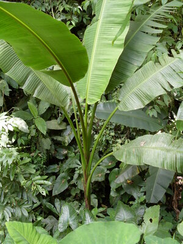
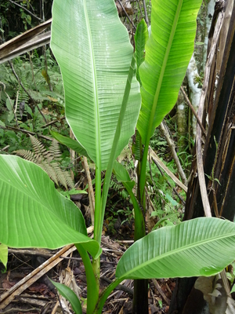

abaka  
/ʔabaka/
n.
“hemp_plant”
n.
Musa_textilis
the hemp plant
Wrd.Gloss: hemp
Cult. Used to make rope; major export product; banana family
Ka abaka iyan ka pinamula ne egkeeg-ut wey egkaseleppian. Ka abaka ne diyè te katalunan iyan igngaran ka leew, wey ka igpamula iyan igngaran ka leing. Ka egkeeg-ut ligkat kayi egngaranan e te lanut ne iyan eggimuwen ne me hinabel. Malebud seini ne pinamula wey warè sugpang ne mahaan egkahepù ka tikeg te dewun kayi wey mahaan degma egkahisi ka me dewun minsan te kalamag dè. Ne emun ke warè nahisi-gisi ka dewun te niyug, nekeg-iling iya perem se dewun dan.
O. Syn. lanut —the harvested fibre
Impamula a te me abaka su eyew egtulin eggeg-uten kud ne igbelegyè kud diyè te Kelinan.
I planted abakas in order to strip it to fiber when it grows and sell it there in Calinan.
Eng. hemp; abaca; Manila hemp
Tag. abaká
Ceb. abaka
Tigwanon: ʔabaka
Binukid: ʔabaka
Dibabawon: ʔabaka
Cagayano: ʔabaka
Kinamigin: ʔabaka
Sarangani: ʔebaka
Tagbawa: baka
Proto: ʔabaka
OCM: Flora (137), Special Crops (249)
DDP: Plant (1.5)
Online dict status: c
Usage level: M
Updated by: RJH,TME,RAA
Last updated: 15/Jan/2011
This page last updated: 19/May/2012
Copyright © 2009-2010, Matigsalug Language Christian Association, Inc